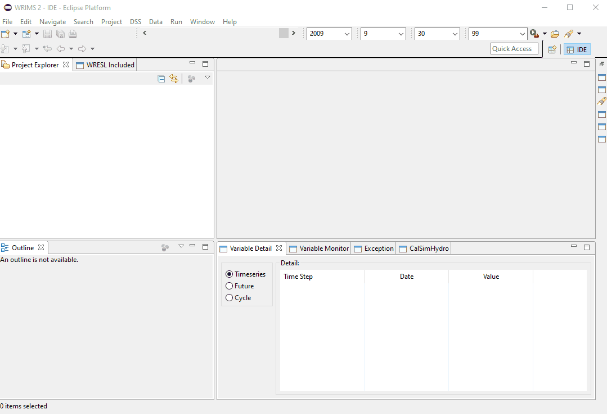
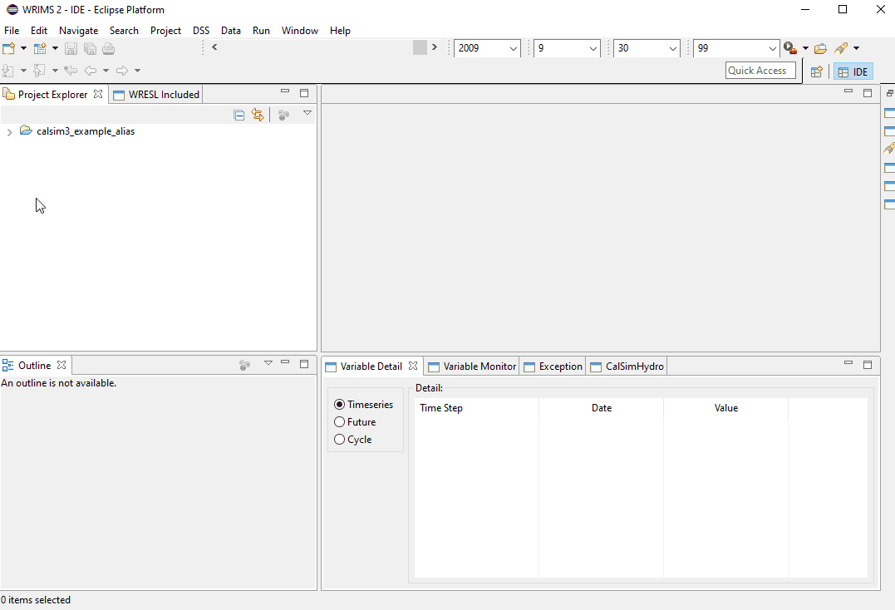

Hello CalSim
This page contains instructions to download and run an example CalSim 3 model.
Step 1: Download Files
The Water Resource Integrated Modeling System (WRIMS) is a generalized water resources modeling system for evaluating operational alternatives of large, complex river basins. CalSim 3 is an application of WRIMS. The WRIMS GUI/IDE is the entry point for modifying, running and debugging CalSim 3 models. Download the WRIMS GUI/IDE here
An example CalSim 3 model package is provided here. This package contains all the necessary inputs and code needed to run the model. Download an example CalSim 3 model package here
Step 2: Open the WRIMS GUI/IDE and Load CalSim 3 Study
To start a CalSim 3 run, you will first need to load the study into WRIMS.
Open the WRIMS GUI/IDE and import the CalSim 3 model by selecting File → New → Project.
Next, browse to the CalSim 3 model folder that you have downloaded and unzipped, and type in an alias as your Project Name.

Step 3: Open ".launch" file and Run CalSim 3 Study
Note
This step is applicable if an appropriate .launch file is already included in the CalSim 3 study package. If you need to modify a launch file, see Configuring the .launch File
Once you have a study loaded into WRIMS, the next step is to run the study. Expand the CalSim 3 study that you've loaded into WRIMS and right-click on the .launch file → Run As → Select the .launch file name. 